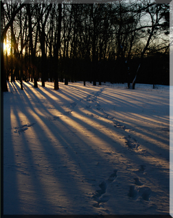

|
Below
Zero
By g.l. bass (the ghostbear still lives)
12/5/00
for
my brother Bryon
Below zero,
You feel cold seep
Beneath you,
Through You,
Deep down inside you.
Off your shoulder,
Crimson horizon
Becomes
An auburn-gold umbrella
Slowly drowning into
Star sparkled azure winter sky.
A dark orange eye,
Sun
Sinks
Softly
As if day refuses to die.
Night
pulls
Heavy sun
Down
Below
Day’s last breath
And swallows
What remains
Of thinning shadows.
Finally
Day gives way
And azure blue freezes
All last
Silent
Moments
Before
Night folds,
Even your smallest memories,
Into
Crisp, cold darkness.
Below
Zero,
Snow cracks and screeches
Beneath your boots.
A lone hunter,
You find your weary way,
At the end of this frozen day,
Through cold thoughts and silent secrets
Of tall lodgepole pines-
Their thick lofty heads
Stand tight side by side,
Their winter whispers
Swirl in the wind
Behind you, above you, around you,
Their icicle fingers
Point everywhere,
But lead nowhere.
The trail remains
Frozen hard pack,
Deep Burried stories-
Deer searching warmth,
Wolves hunting behind them,
Midnight
Raccoon
Bandits,
Robbers whose idea of life
Is to steal other’s trails,
They turn all tracks to lies,
And trails to circle
Mind games
Without direction.
All those spirits
Leave behind
Their own kind
Of Winter warnings.
Below
Zero,
Your breath against cold
Pine needles
Releases
Stinging perfume up your nostrils,
You swallow it,
An awakening elixir,
As if pine-blood
Runs cold and deep
To your heart,
Even to your soul.
The forest amd you become one-
Blood run to blood inside you.
Below zero,
Half moon climbs heavy,
Its yellow glow dimly shines
Through lofty pines and
Throws long thin shadows upon the snow.
Below Zero,
Time moves slow.
Night’s erie madness
Flows along deep drifts,
Down hidden fencelines,
And even into your mind.
As if a deep winter
Warning sign,
Heavy half-moon
Refuses to glow.
A Wolf's Howl
H a n g s
A slow clinging echoe
Out in night's sky.
Below zero,
You are diminished
By cold’s icy grip.
You understand
The difference
Between knowing
And losing track
Of time and your mind.
In
deep drifting snow,
You understand the difference
Between knowing the trail,
And being lost
Beneath and within
The darkest corner
Of the forest's
Soul.
Below Zero,
Through dark towering pines,
Through thick thicket,
Through starving
Naked hardwoods,
It is nearly invisible to find.
The trails only sign-
Winding drifts along
A twisting fine
fenceline
Stretching against
The night,
To a point
True
The moon points to,
A small yellow light
Inside the cabin's
Western window,
You left on,
Far behind.
Against the cold
You breathe deep,
Amidst spirits of the forest
You seek
To embrace night’s secrets,
And find their saving grace.
A shadow crawling along the trail,
Slowly,
Steadily,
You struggle your way
Through heavy, hung in Winter night.
In and out, around, between,
In then out, up and about
You find your way through pine,
Low oak, grabbing sumac and vine.
Only tall hickory lead you without treachery
Along the trail,
Up along the thin, winding fence line,
Until your shadow disappears
Finally down, out of the forest,
Across the stream
Toward home.
Up
the hill,
Over the fence,
You look back
Across dark farm fields,
Down fence lines
Where your eyes
Can only read
Slim Outlines
Of forest
Beneath
Moon's half-hearted shine.
Below Zero,
You know
You've left behind,
Amidst forest secrets,
Deep within frozen
Night,
Some part of yourself,
Where the Wolf can find
He's had another hunter
Share his boundary line.
You know,
Since pines thought
To become treelines,
And the moon began
To draw signs
In sharp shadows
Across deep
drifts of snow,
The Wolf and you
Have been brothers
Of the forest,
The harsh frozen night,
And
Even
Harsher
Edges
Of
Frozen
Time.
|